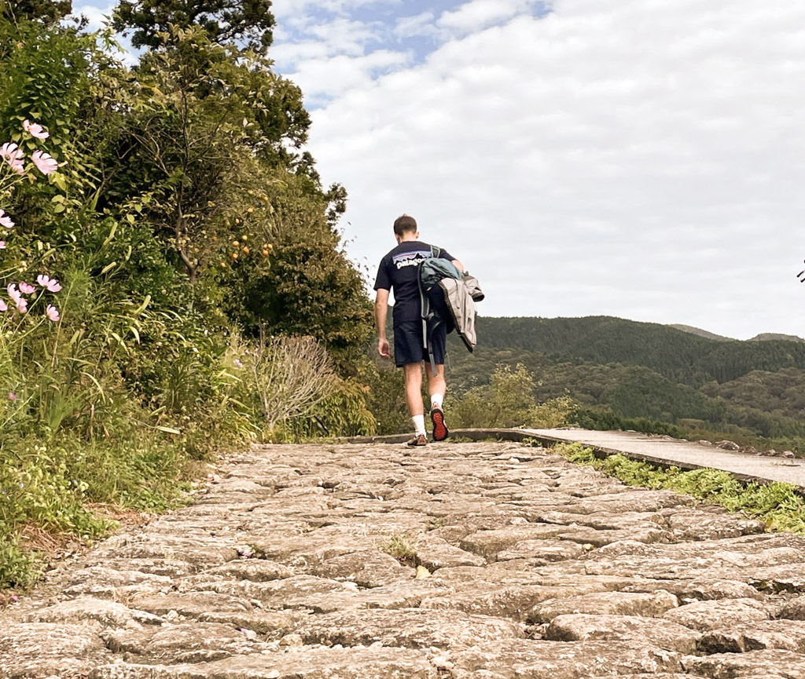
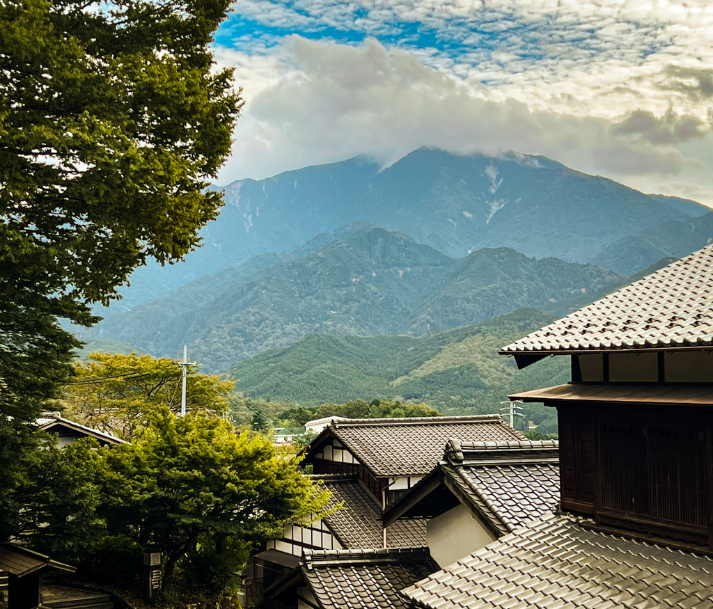
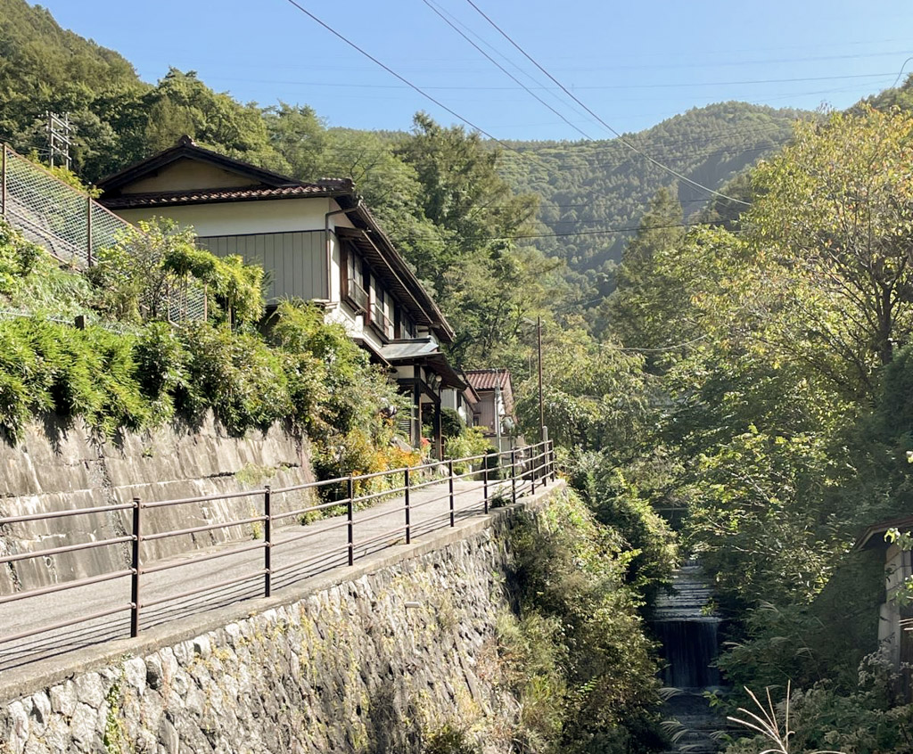
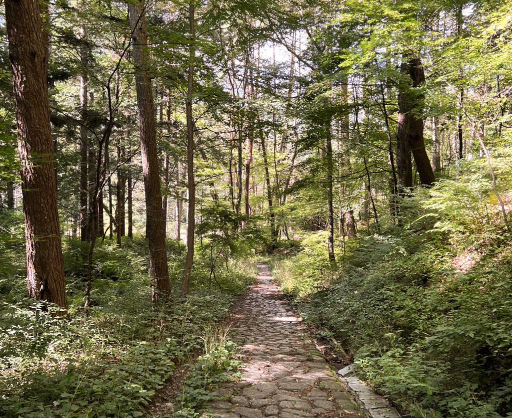

Nakasendo Trail Itinerary: 3 Days Exploring Japan's Countryside
Hiking the Nakasendo Trail: Magome to Narai
Embark on the Nakasendo trail between Magome and Narai to escape urban life and immerse yourself in serene, stunning countryside. Over a few days, you'll traverse rural mountain passes, tranquil forests, and historic post towns, experiencing the best of rural Japan on foot.
This recommended itinerary is perfect for travelers wanting a mix of nature, tradition, and active exploration in their longer Japan itinerary. For those short on time, the first segment can be enjoyed as a day hike, ideally with an overnight stay in Tsumago.
Day 1: Magome to Tsumago
Begin your journey in Magome, a beautifully preserved post town in the Kiso Valley, Gifu Prefecture. The 9 km hike, taking about 3-4 hours, follows some of the most well-preserved parts of the Nakasendo Trail to Tsumago. As you ascend through Magome, you'll pass wooden establishments offering local specialties like soba noodles, oyaki dumplings, and gohei mochi.
Reach the Magome-toge Pass at the hill's summit, where the trail descends. Enjoy shaded forests, rocky creek bridges, and the serene Odaki-Medaki waterfalls. In Tsumago, marvel at the well-preserved Edo-era buildings and visit the twice right-angled masugata street. Consider spending an extra day here to explore the town further, with many small inns available.
Day 2: Tsumago to Nojiri & Train to Kiso-Fukushima
After a rural Japanese breakfast, embark on an 18 km hike to Nojiri, which takes approximately 6 hours and involves significant uphill walking. This part of the trail immerses you deeper into rural Japan, offering a blend of natural beauty and off-the-beaten-path experiences.
Begin with a pleasant walk from Tsumago to Nagiso, home to the 1920s wooden Momosuke bridge. This small town is a good spot to pick up snacks and drinks for the day. Continue uphill through dense forests and quaint farmland, occasionally passing through local back gardens where you might see residents tending to their plants.
As you reach the Yogawa road, terraced rice fields come into view, leading into mossy forests adorned with bear bells for wildlife. At the Nenoue Pass, the trail descends to Nojiri. From Nojiri, take a train to Kiso-Fukushima (a 30-minute ride). This area boasts lovely ryokans and soothing onsens, perfect for relaxing after a long day of hiking.
Day 3: Over the Torii Pass to Narai-juku
From Kiso-Fukushima, take a quick train to Yabuhara Station and hike for about 3 hours over the Torii Pass to Narai-juku. Alternatively, there's a moderately intensive circular hike to a local waterfall near Kiso-Fukushima. From Yabahara, follow signs through the town to the Torii Pass trailhead. Historically, the halfway point of the Nakasendo Road, it's now a beautiful spot nestled among red cedar trees and ancient statues. The trail zigzags down to Narai, a well-preserved village historically midway between Edo and Kyoto. Explore museums, handcrafted ornaments, and historical cafes. Marvel at the Kiso Bridge over the Narai River and spend the night in one of Narai's many small inns.
Route planning in Google maps:
Too plan ahead a bit due to wifi being a bit spotty in rural Japan, see the routes below.